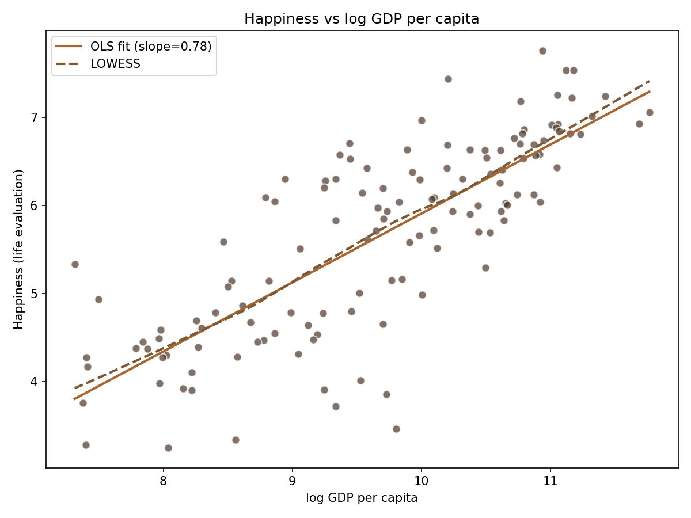
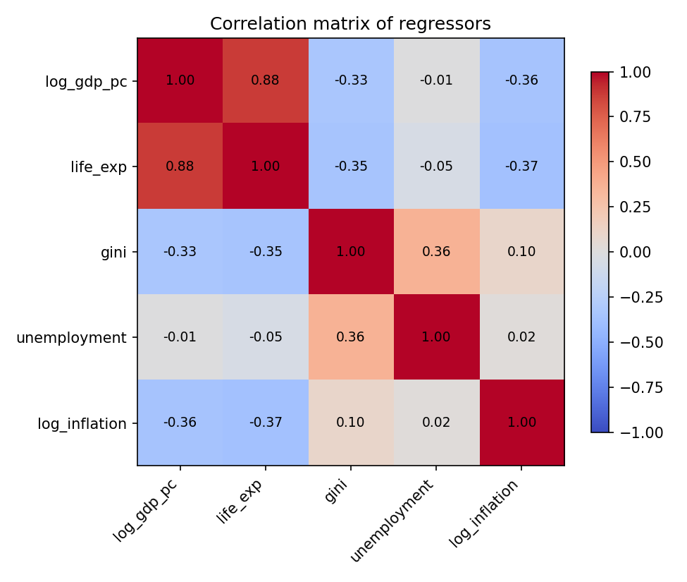
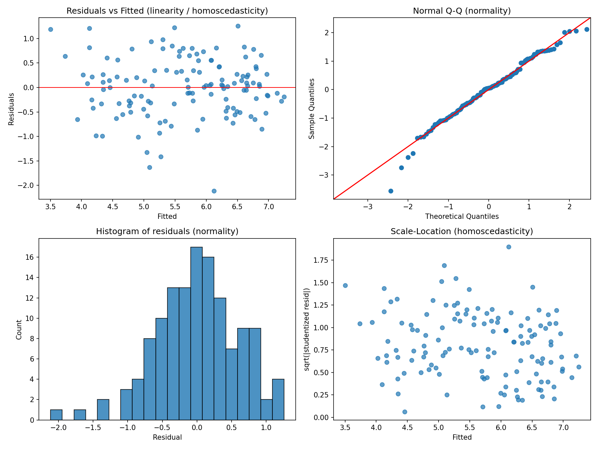
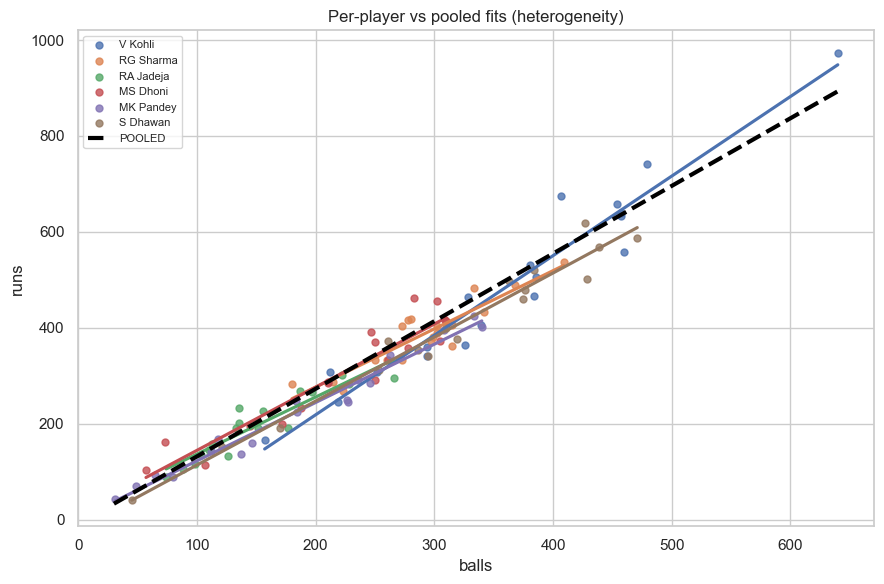
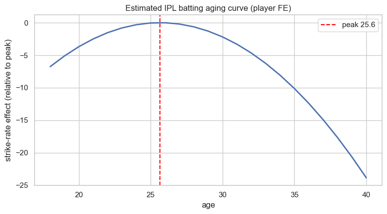
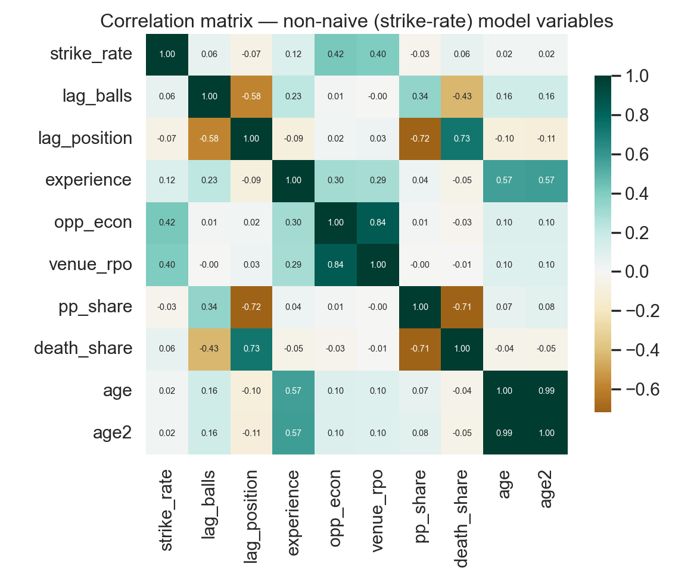
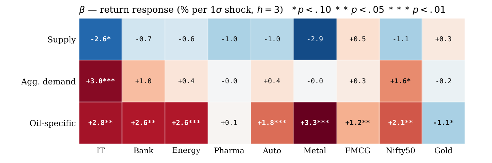
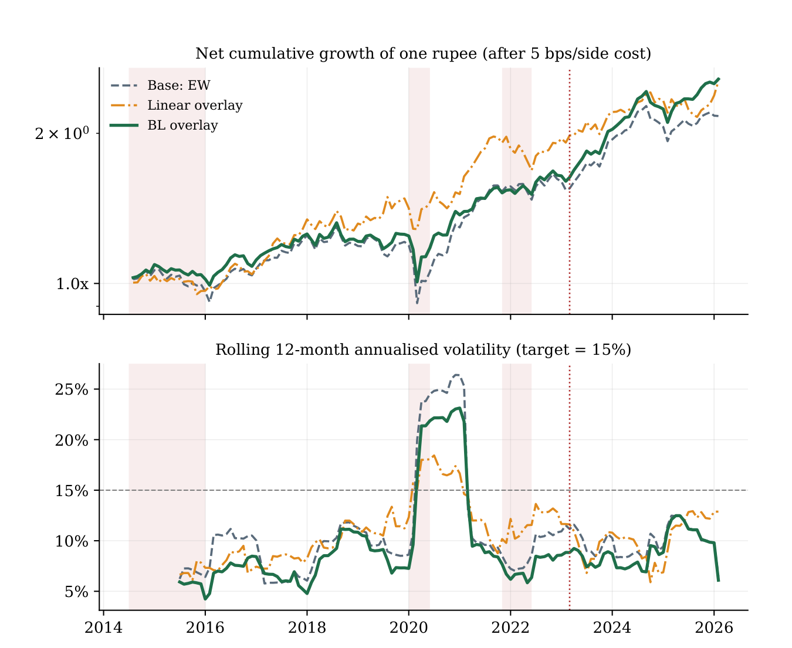
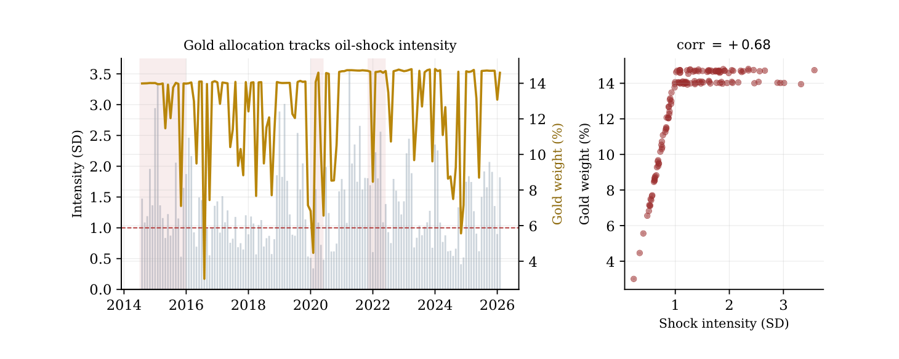

Data science and statistical modelling projects
from my coursework at IIM Calcutta and ISI Kolkata.

Does Money Buy Happiness?
A cross-country econometric enquiry into whether national income causally raises happiness. World Happiness Report scores for 131 countries were regressed on log GDP per capita alongside four World Bank controls (life expectancy, Gini, unemployment, inflation), then stress-tested with a full diagnostic battery: VIF for multicollinearity, Breusch-Pagan and White tests for heteroscedasticity, RESET for functional form, Jarque-Bera and influence diagnostics on the residuals.
Because GDP and happiness plausibly cause each other, the OLS estimate is suspect. Using distance from the equator as an instrument for income, 2SLS more than doubled the coefficient (0.614 → 1.287), and a Wu-Hausman test (p = 0.007) confirmed endogeneity — evidence that the naive regression understates the causal effect of income on happiness.
0.705
R²
131
Countries
1.287
2SLS coef (log GDP)
18.0
First-stage F
Figures from the analysis



Forecasting Criminal Arrests
A time series study of daily criminal arrests in New York City (2012-2017), treating arrest counts as a stochastic process with strong weekly seasonality (visible in the raw data above, with crash events marked in red). Four SARIMAX variants were compared: with and without log-transformation, and with and without exogenous holiday and disruption indicators.
The original-scale model with exogenous variables (OG-EXO) was selected as the final model. Lower residual autocorrelation confirmed it captured the underlying structure more faithfully than the log-transformed variant, even at slightly higher numerical error. The work shows that external disruptions (holidays, strikes) systematically suppress arrest activity and must be accounted for in urban planning models.
0.655
R²
0.10
MAE (log model)
2,192
Daily datapoints
4
Models compared
Figures from the report



What Drives an IPL Batter's Season?
A panel-data study of IPL batting built from Cricsheet ball-by-ball data: 410 players tracked across 19 seasons, giving 1,676 player-seasons. The estimator ladder ran Pooled OLS → Fixed Effects → Random Effects, with a Hausman test decisively favouring FE — each batter's unobserved talent matters (visible above, where per-player fits diverge from the pooled line).
The naive model (runs on balls faced) posted a 0.93 within-R² — an arithmetic artefact, not insight. Re-specifying the outcome as strike rate, lagging opportunity regressors against reverse causality, and adding match-context controls collapsed it to an honest ~0.16. What survived every specification, including Arellano-Bond dynamic GMM: death-over exposure and run-friendly venues lift strike rates, and an inverted-U aging curve puts peak batting age at ~25.6 years.
410
Players
19
Seasons
1,676
Player-seasons
25.6
Peak batting age
Figures from the analysis



Music: Phonetic Factors & Popularity
Can you predict whether a song will be a hit, based solely on its audio fingerprint? This project builds an XGBoost classifier on the Spotify 114k dataset to answer that. Using 13 phonetic features (danceability, valence, energy, loudness, etc.), the model learns to distinguish popular from non-popular tracks without ever hearing them.
Stratified 10-fold cross-validation and Ridge regularisation controlled overfitting, while 200-iteration RandomizedSearchCV tuned the hyperparameters. Correlation analysis (above) guided feature selection, revealing strong multicollinearity between energy-loudness and acousticness-energy that made regularisation essential.
0.787
ROC-AUC
0.802
PR-AUC
0.79
Recall (popular)
114k
Tracks
Figures from the report



Mapping Oil-Price Risk in Indian Equities
A single number for "the oil price" hides three different economic events: a supply disruption, a global demand swing, and oil-specific speculation. This study separates them with a Kilian structural VAR (1993-2026), maps how each shock propagates into ten Indian equity and safe-haven sleeves via Jordà local projections (the exposure map above), and converts that map into a monthly Black-Litterman portfolio overlay with a conditional gold and liquid-bond hedge.
Out of sample, the overlay lifts the net Sharpe ratio from 1.27 to 1.85 and cuts the portfolio's oil-variance share roughly in half — at one-seventeenth the turnover of a linear control. Every headline claim faces a robustness battery of walk-forward folds, placebos, and bootstraps, and the report states plainly what the evidence does not support: the value of timing the hedge cannot be separated from a constant defensive tilt at this sample size.
1.85
Net Sharpe (OOS)
−48%
Oil-variance share
16.2%
Annual net return
+0.68
Corr (gold, oil shock)
Figures from the report

